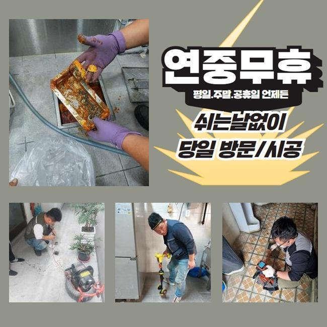
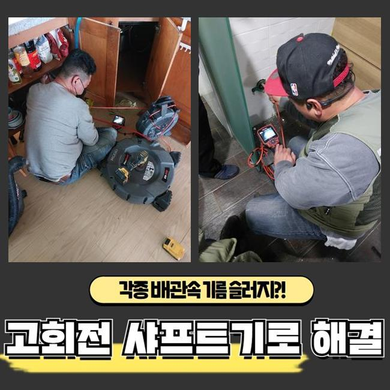
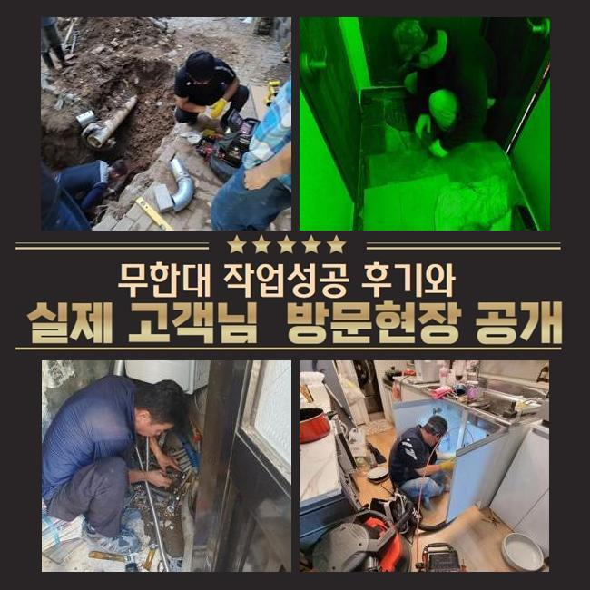
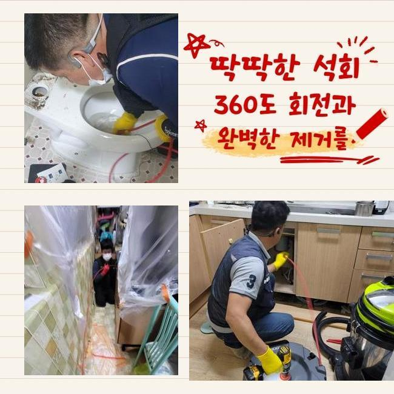
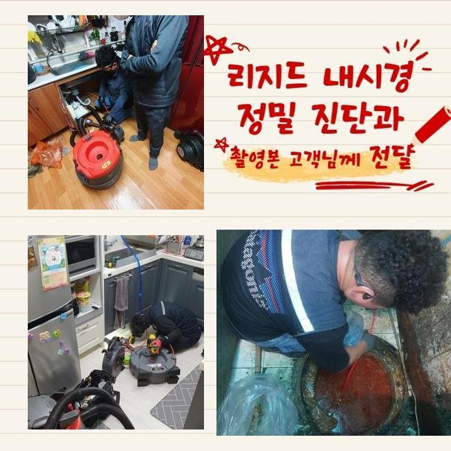
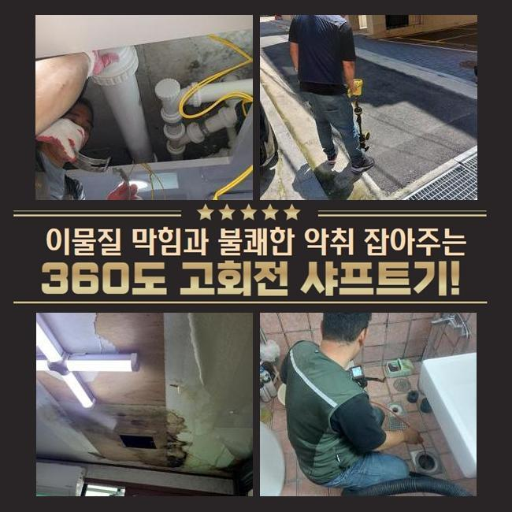

🏠 종로 신영동싱크대배수구역류 효자동 악취차단 배관막힘뚫는업체
용인 싱크대막힘 전문 시공 후기

📋 작업 개요
- 위치: 용인
- 서비스 유형: 싱크대막힘, 변기막힘, 하수구막힘, 배관막힘, 누수수리, 역류해결, 뚫는업체, 고압세척, 설비공사, 악취차단
- 작업 일시: 2025. 3. 13. 23:42
- 업체명: 하수구수사대 (010-5615-2118)
🔍 문제 상황
종로 신영동싱크대배수구역류 효자동 악취차단 배관막힘뚫는업체
집안에서 물막힘이 일어나는 정황은 한두번씩은 경험해보셨을거라고 생각하고 있어요
급작스럽게 화장실 변기나 주방시설에서 발현되는 배수관 정체는 평범한 삶에 커다란 지장을 야기하게 되는데요
그럼 주방시설에선 왜 막힘이 일어나는것인지 알아볼 필요가 있겠죠
주방시설은 요리할때 발생되는 각종 오염물질과 미세한 수세미 파편들이 배수관에 적체되어 막힘이 일어나요
그렇게 되면 배수문제를 비롯하여 고약한 냄새까지 퍼지며 노폐물들로 인해 관로가 노화되어서 더욱 커다란 트러블을 불러올수 있죠
통상 해당하는 고장이 포착되었을 경우에 시중의 제품을 사용하여 해결해보려 시도하시는데요
그렇지만 그런 방안은 짧은 시간의 사용만 유지하게 만들어줄뿐 원적적인 요소를 소멸시키지 못한다면 정체가 재발할수 있어요
차단을 만든 잔재들이 관로 하부에 있다면 일반인이 쉽게 목도하거나 처리하기 힘겹기 때문이랍니다
거기에 더해 서툴게 수리를 한다면 외려 사태를 악화되게 만들어 잔재들을 적절히 정리해낼수가 없는거랍니다
그렇기 때문에 하수관이 막히게 되면 기술자를 찾아 명확하고 깨끗하게 해결하는게 마땅합니다

🔎 원인 분석
💡 전문가 진단: 정밀 진단 장비를 사용하여 슬러지의 고착 여부를 판명하고 타격/세척 작업을 실시했습니다.
일주일전에 저희팀은 관로 막힘으로 시공문의를 받았어요
고객님은 욕실에서 생긴 배수관정체로 오취가 생기고 역류까지 일어나 평범한 삶에 커다란 지장을 겪는 중이셨어요
냄새가 너무 심해서 생활을 이어나가기가 힘겨웠고 역류까지 일어나 화장실이 더욱 지저분해지는 형편에 다다랐다고 이야기하셨죠
손님분의 힘겨움을 조금이나마 빨리 처치하려 즉각 고장이 생긴 위치로 출발했어요
내방한뒤에 의뢰인과 이야기를 나누고 정황을 상세하게 파악하였어요
의뢰자께서는 욕실에서 물빠짐이 되지않고 역류하는 상황까지 발발하여 실내가 더러워진 상황이라고 토로하셨어요
이주일전 쯤부터 이런 사태가 생겼는데 놔뒀더니 더 악화되었다고 하십니다
그러할때 간단하게 관로뚫음을 이행하여서는 본질적인 해결에 다가서기 힘들죠
오염물질이 배수관에 강력하게 고정된것이라 안쪽의 현황을 세밀하게 검사한다음에 적합한 기기와 방식을 토대로 시공에 나서야 하겠습니다
안쪽에서 일어난 막힘은 직시하여 조사하기 어려울 때가 많답니다
그렇기에 저흰 배관내시경을 활용해 배관안쪽의 상황을 면밀히 검사하게 되었던거죠
내시경을 통해 들여다보니 하수관 내측엔 상당기간 누증된 음식 잔재들과 기름때들이 엉겨서 구멍을 빼곡히 차단하고 있었어요

🔧 작업 과정
또한 침전물들이 바위처럼 단단해져 간단히 세정만해서는 정비가 난망하였어요
배수관 관측을 마무리한뒤 샤프트기계를 동원하여 파이프에 강력하게 붙은 오물들을 세척하는 일을 속행하였습니다
해당 기기는 배관속에 누증된 잔재들을 신속하게 파괴하고 없앨수 있기에 다양한 혼합슬러지들이 굳어서 안움직일때 상당히 쓸모가있죠
해당 기기는 회전력으로 고형물을 작게 깨뜨려서 관로에 상존하는 억센 유분찌꺼기나 석회물질 등을 온전히 정리할수 있죠
그렇긴하지만 조절을 잘못하여 공사를 진행한다면 관이 망가질수 있어서 풍부한 경험과 주의깊은 시공이 요망되죠
금번에 찾아간 현장은 게다가 이물들이 배관에 단단히 접착된 상황이었기에 한두번의 작업으론 소제하기 힘들었답니다
주위를 둘러싼 석회찌꺼기는 더욱더 그러한 형편을 악화하게 만들었어요
그래서 저희 측은 고압물세척 기계와 스케일러 기기를 동시에 사용하면서 이물들을 정리하고 온전히 제거하는 작업을 진행하였던 거죠
강력한 압력으로 찌꺼기를 정리할 땐 파편이 근방으로 흩어지지 못하도록 주의를 기울여야 해요
슬러지가 주위로 퍼져나가 주변부가 심각한 모습으로 변질된다면 처치가 어려워지기도 하므로 주의깊은 작업이 요구되죠
그래서 세척중 그러한 사태를 방지하려 보양업무를 선행했으며 의뢰인께서 불편하지 않게 안전하게 업무를 진행했죠
찌꺼기를 제거하고나서 다시금 배관내시경을 투입하여 파이프를 검사하였죠
안에 상존하는 석회물질이나 부가적인 트러블을 체크하는건 무척 중요하다고 볼수 있어요
본 현장에선 수시로 배수관 안쪽을 검사하고 연계하여 일어날 가망이 큰 문제점을 예방하였죠
전체적으로 찌꺼기가 소멸된걸 검증한뒤 생활하수를 부으면서 배수기능을 회복했는지 검사해 보았답니다
온전히 빠져나가는 걸 직각적으로 검증하였어요
배수구로 하수가 순조롭게 사라지는걸 고객님도 직관하셨으며 완전하게 고쳤다는걸 확실시할수 있었죠
사태를 방치하는 바람에 침전물이 한층더 늘어나게 된다면 주변이웃들에게 고장상황이 전가될수도 있어요
그럴땐 생각해야한 내용이 더욱 많아질수 있으므로 서둘러서 수리를 받으시는 것이 마땅합니다


✅ 작업 완료
그리고 하수구막힘은 일상을 영위하시는데 커다란 애로사항이 되므로 되도록이면 신속하게 고치시는게 좋답니다
관로막힘 상황이 길어진다면 위생적인 문제를 줄뿐만 아니라 관로훼손에 따른 누수증세까지 일어날수 있다는것도 인지하고 있어야 하겠죠
시공전엔 꼭 온전한 도구들을 소지해두어야 하겠습니다
그렇게되지 않는다면 배관조사를 온전히 못하는 상황이 나타나 고장이 또 생길수가 있답니다
해당 사태들로 진단이 필요하다면 저희쪽으로 편하게 연락주시길 당부드립니다



⚠️ 베란다 누수 및 방수 관리 방법
- ✅ 비가 많이 올 때 창틀 주변이나 아래층 천장에 얼룩이 생기는지 정기적으로 확인해 보세요.
- ✅ 우수관 주변 실리콘 마감이 들뜨거나 깨진 틈새가 있는지 손상 여부를 수시로 체크하세요.
- ✅ 베란다 바닥 타일의 줄눈(메지)이 소실되면 그 틈으로 물이 침투하여 누수가 유발됩니다.
- ✅ 누수 의심 증상 발견 시 방치하면 아래층 손실이 커지므로 즉시 전문가의 진단을 받으십시오.
💡 핵심 정리
- 확실한 장비 작업(내시경 점검 및 샤프트 스케일링)으로 원인을 뿌리 뽑습니다.
- 작업 후 1년 이내에 동일한 부위 재발 시 100% 무상 A/S 서비스를 보장합니다.
- 서울 · 경기 · 인천 전 지역에 24시간 언제든 긴급 출동할 수 있도록 항시 대기 중입니다.
❓ 자주 묻는 질문 (FAQ)
🚨 용인 싱크대막힘 문제로 고민이신가요?
정확한 원인 진단과 확실한 시공으로 재발 없는 해결을 약속드립니다.
24시간 긴급 출동 | 서울 · 경기 · 인천 전지역 | 1년 내 재발 시 무상 A/S